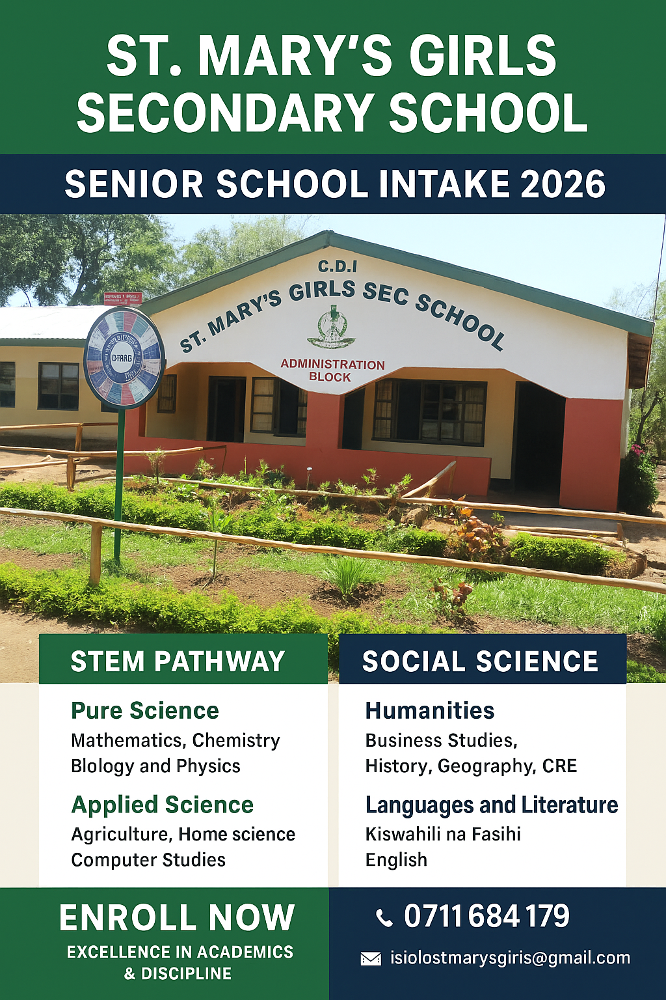

Science & STEM

Jan 28, 2026
Inspiring Scientific Excellence and Girls in STEM
Our students continue to break barriers in science and technology, as highlighted in this year's magazine feature on innovation and excellence.
Read Full Story